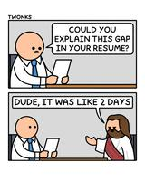

0
0




"Canonical is no longer pretending that 4GB is enough," writes the blog How-to-Geek, noting Ubuntu 26.04 LTS "raises the baseline memory to 6GB, alongside a 2GHz dual-core processor, and 25GB of storage..."
Ubuntu 14.04 LTS (Trusty Tahr) set the floor at 1GB — a modest ask when it launched more than a decade ago in 2014. Then came the Ubuntu 18.04 LTS (Bionic Beaver) that pushed the number to 4GB, surviving quite well in the era of 16GB being considered standard for mid-range laptops.... Ubuntu's new minimum requirement lands in an interesting spot when compared against Windows 11. Microsoft's operating system requires just 4GB RAM, although real-world usage often tells a different story. Usually, 8GB is considered the sweet spot to handle modern apps and multitasking.
The blog OMG Ubuntu argues this change is "not because Ubuntu requires 2GB more memory than it did, but more the way we compute does."
it's more of an honesty bump. Components that make up the distro — the GNOME desktop and extensions, modern web browsers (and the sites we load in them) and the kinds of apps we use (and keep running) whilst multitasking are more demanding... The Resolute Raccoon's memory requirements better reflect real-world multitasking.
Ubuntu 26.04 LTS can be installed on devices with less than 6GB RAM (but not less than 25GB of disk space). The experience may not be as smooth or as responsive as developers intend (so you don't get to complain), but it will work. I installed Ubuntu 26.04 Beta on a laptop with just 2 GB of memory — slow to the point of frustration in use, but otherwise functional.
If you have a device with 4 GB RAM and you can't upgrade (soldered memory is a thing, and e-waste can be avoided), then alternatives exist. Many Ubuntu flavours, like Lubuntu, have lower system requirements than the main edition. Plus, there's always the manual option using the Ubuntu netboot installer to install a base system and then built out a more minimal system from there.
Read more of this story at Slashdot.
Apple's 50th anniversary got celebrated in weird and wild ways. CEO Tim Cook posted a special 30-second video rewinding backwards through the years of Apple's products until it reaches the Apple I. Podcaster Lex Fridman noticed if you play the sound in reverse, "It's the Think Different ad music, pitched up." TechRadar played seven 50-year-old Apple I games on an emulator, including Star Trek, Blackjack, Lunar Lander, and of course, Conway's Game of Life.
And Macworld ranked Apple's 50 most influential people. (Their top five?)
5. Tony Fadell (iPhone co-creator/"father of the iPod")
4. Sir Jony Ive
3. Steve Wozniak
2. Tim Cook
1. Steve Jobs
One of the most thoughtful celebraters was David Pogue, who's spent 42 years of writing about Apple (starting as a MacWorld columnist and the author of Mac for Dummies, one of the first "...For Dummies" books ever published in the early 1990s.) Now 63 years old, Pogue spent the last two years working on a 608-page hardcover book titled Apple: The First 50 Years. But on his Substack Pogue, contemplated his own history with the company — including several interactions with Steve Jobs. Pogue remembers how Jobs "hated open systems. He wanted to make self-contained, beautiful machines. He didn't want them polluted by modifications."
The tech blog Daring Fireball notes that Pogue actually interviewed Scott Forstall (who'd led the iPhone's software development team) for his new book, "and got this story, about just how far Steve Jobs thought Apple could go to expand the iPhone's software library while not opening it to third-party developers."
"I want you to make a list of every app any customer would ever want to use," he told Forstall. "And then the two of us will prioritize that list. And then I'm going to write you a blank check, and you are going to build the largest development team in the history of the world, to build as many apps as you can as quickly as possible." Forstall, dubious, began composing a list. But on the side, he instructed his engineers to build the security foundations of an app store into the iPhone's software-"against Steve's knowledge and wishes," Forstall says. [...]
Two weeks after the iPhone's release, someone figured out how to "jailbreak" the iPhone: to hack it so that they could install custom apps. Jobs burst into Forstall's office. "You have to shut this down!" But Forstall didn't see the harm of developers spending their efforts making the iPhone better. "If they add something malicious, we'll ship an update tomorrow to protect against that. But if all they're doing is adding apps that are useful, there's no reason to break that." Jobs, troubled, reluctantly agreed.
Week by week, more cool apps arrived, available only to jailbroken phones. One day in October, Jobs read an article about some of the coolest ones. "You know what?" he said. "We should build an app store."
Forstall, delighted, revealed his secret plan. He had followed in the footsteps of Burrell Smith (the Mac's memory-expansion circuit) and Bob Belleville (the Sony floppy-drive deal): He'd disobeyed Jobs and wound up saving the project.
In fact, the book "includes new interviews with 150 key people who made the journey, including Steve Wozniak, John Sculley, Jony Ive, and many current designers, engineers, and executives" (according to its description on Amazon). Pogue's book even revisits the story of Steve Jobs proving an iPod prototype could be smaller by tossing it into an aquarium, shouting "If there's air bubbles in there, there's still room. Make it smaller!" But Pogue's book "added that there's a caveat to this compelling bit of Apple lore," reports NPR.
"It never actually happened. It's just one more Apple myth."
Read more of this story at Slashdot.
Nine days ago Microsoft released a non-security "preview" update for Windows 11 — not mandatory for the average Windows user, notes ZDNet, "but rather as optional, more for IT admins and power users who want to test them."
TechRepublic adds that the update "was to bring 'production-ready improvements' and generally ensure system stability by optimizing different Windows services." So it's ironic that some (but not all) users reported instead that the update "blocks users at the door, refusing to install or crashing midway through the process."
"It apparently impacted enough people to force Microsoft to take action," writes ZDNet. "Microsoft paused and then pulled the update," and then Tuesday released a new update "designed to replace the glitchy one. This one includes all the new features and improvements from the previous preview update, but also fixes the installation issues that clobbered that update."
Meanwhile, as Windows 11 version 24H2 approaches its end of life this October, Microsoft is now force-updating users to the latest version, reports BleepingComputer:
"The machine learning-based intelligent rollout has expanded to all devices running Home and Pro editions of Windows 11, version 24H2 that are not managed by IT departments," Microsoft said in a Monday update to the Windows release health dashboard... "No action is required, and you can choose when to restart your device or postpone the update."
Neowin reports:
The good news is that the update from version 24H2 to 25H2 is a minor enablement package, as the two operating systems share the same codebase. As such, the update won't take long, and you should not encounter any disruptions, compatibility issues, or previously unseen bugs... Microsoft recently promised to implement big changes in how Windows Update works, including the ability to postpone updates for as long as you want. However, Microsoft has yet to clarify if that includes staying on a release beyond its support period.
Thanks to long-time Slashdot reader Ol Olsoc for sharing the news.
Read more of this story at Slashdot.
Slashdot reader Kirkman14 writes: A year before the Web opened to the public, Texas entrepreneur Don Lokke was trying to syndicate weekly political cartoons to bulletin board systems. His "telecomics," as he called them, represent an overlooked early experiment in online comics. Lokke launched his main series, "Mack the Mouse" at the height of the 1992 Clinton-Bush-Perot presidential race. His mouse protagonist voiced the frustrations felt by everyday Americans about rising taxes and the recession. Lokke gave away "Mack" for free, but sold subscriptions to his other telecomics, betting sysops would pay for exclusive content. The timing wasn't crazy: enthusiasm for BBSes as an industry was surging, with conferences like ONE BBSCON promoting "BBSing for profit." But the Web soon deflated those hopes, and Lokke left BBSes behind in 1995. Decades later, about half of his nearly 300 telecomics were recovered and preserved on 16colors.
Read more of this story at Slashdot.
Anthropic's making a big and sudden change — and connecting its Claude AI to third-party agentic tools "is about to get a lot more expensive," writes the Verge:
Beginning April 4th at 3PM ET, users will "no longer be able to use your Claude subscription limits for third-party harnesses including OpenClaw," according to an email sent to users on Friday evening. Instead, if users want to use OpenClaw with Claude, they'll have to use a "pay-as-you-go option" that will be billed separate from their Claude subscription.
Anthropic's announcement added these extra usage bundles are "now available at a discount." Users can also try Anthropic's API, notes VentureBeat, "which charges for every token of usage rather than allowing for open-ended usage up to certain limits, as the Pro and Max plans have allowed so far. "
The technical reality, according to Anthropic, is that its first-party tools like Claude Code, its AI vibe coding harness, and Claude Cowork, its business app interfacing and control tool, are built to maximize "prompt cache hit rates" — reusing previously processed text to save on compute. Third-party harnesses like OpenClaw often bypass these efficiencies... [Claude Code creator Boris Cherny explained on X that "I did put up a few PRs to improve prompt cache hit rate for OpenClaw in particular, which should help for folks using it with Claude via API/overages."] Growth marketer Aakash Gupta observed on X that the "all-you-can-eat buffet just closed," noting that a single OpenClaw agent running for one day could burn $1,000 to $5,000 in API costs. "Anthropic was eating that difference on every user who routed through a third-party harness," Gupta wrote. "That's the pace of a company watching its margin evaporate in real time."
However, Peter Steinberger, the creator of OpenClaw who was recently hired by OpenAI, took a more skeptical view of the "capacity" argument."Funny how timings match up," Steinberger posted on X. "First they copy some popular features into their closed harness, then they lock out open source." Indeed, Anthropic recently added some of the same capabilities that helped OpenClaw catch-on — such as the ability to message agents through external services like Discord and Telegram — to Claude Code...
User @ashen_one, founder of Telaga Charity, voiced a concern likely shared by other small-scale builders: "If I switch both [OpenClaw instances] to an API key or the extra usage you're recommending here, it's going to be far too expensive to make it worth using. I'll probably have to switch over to a different model at this point."
"I know it sucks," Cherny replied. "Fundamentally engineering is about tradeoffs, and one of the things we do to serve a lot of customers is optimize the way subscriptions work to serve as many people as possible with the best mode..." OpenAI appears to be positioning itself as a more "harness-friendly" alternative, potentially using this moment as a customer acquisition channel for disgruntled Claude power users.
By restricting subscription limits to their own "closed harness," Anthropic is asserting control over the UI/UX layer. This allows them to collect telemetry and manage rate limits more granularly, but it risks alienating the power-user community that built the "agentic" ecosystem in the first place. Anthropic's decision is a cold calculation of margins versus growth. As Cherny noted, "Capacity is a resource we manage thoughtfully." In the 2026 AI landscape, the era of subsidized, unlimited compute for third-party automation is over. For the average user on Claude.ai, the experience remains unchanged; for the power users running autonomous offices, the bell has tolled.
Read more of this story at Slashdot.
Amazon "must negotiate with a labor union representing some 5,000 workers at a company warehouse on Staten Island," reports Reuters, citing a ruling Wednesday from America's National Labor Relations Board (NLRB).
The union formed in 2022, according to the article, and "has been seeking to negotiate with Amazon over pay, working conditions and other matters."
The NLRB said in its ruling that Amazon "has engaged in unfair labor practices" by refusing to bargain with the labor group or to recognize its legitimacy... Amazon said on Thursday it disagreed with the NLRB's ruling. "Representatives of the NLRB improperly influenced this election," the company said in a statement, suggesting it planned to appeal. "We're confident an unbiased court will overturn the original certification, and we look forward to the opportunity for our team to fairly voice their opinions." An appeal would likely preclude Amazon from having to comply with the NLRB's order while it makes its way through the courts...
Related to the Staten Island case, Amazon has argued that the NLRB itself is unconstitutional and sued to block the agency from ruling on it. The matter is still pending.
After forming independently, that union "has since aligned with the International Brotherhood of Teamsters," the article points out. The Teamsters represent 1.3 million American workers, according to a statement they issued this week, which also includes this quote from the president of Amazon Labor Union-e Local 1. "We are making history at Amazon, and we are doing it through undiluted worker power..."
Their statement adds that the ruling "came only one day after the union announced another historic victory that upheld Amazon Teamsters' right to strike."
Read more of this story at Slashdot.
An anonymous reader quotes a report from Ars Technica: When it comes to large language model-powered tools, there are generally two broad categories of users. On one side are those who treat AI as a powerful but sometimes faulty service that needs careful human oversight and review to detect reasoning or factual flaws in responses. On the other side are those who routinely outsource their critical thinking to what they see as an all-knowing machine. Recent research goes a long way to forming a new psychological framework for that second group, which regularly engages in "cognitive surrender" to AI's seemingly authoritative answers. That research also provides some experimental examination of when and why people are willing to outsource their critical thinking to AI, and how factors like time pressure and external incentives can affect that decision.
Overall, across 1,372 participants and over 9,500 individual trials, the researchers found subjects were willing to accept faulty AI reasoning a whopping 73.2 percent of the time, while only overruling it 19.7 percent of the time. The researchers say this "demonstrate[s] that people readily incorporate AI-generated outputs into their decision-making processes, often with minimal friction or skepticism." In general, "fluent, confident outputs [are treated] as epistemically authoritative, lowering the threshold for scrutiny and attenuating the meta-cognitive signals that would ordinarily route a response to deliberation," they write. These kinds of effects weren't uniform across all test subjects, though. Those who scored highly on separate measures of so-called fluid IQ were less likely to rely on the AI for help and were more likely to overrule a faulty AI when it was consulted. Those predisposed to see AI as authoritative in a survey, on the other hand, were much more likely to be led astray by faulty AI-provided answers.
Despite the results, though, the researchers point out that "cognitive surrender is not inherently irrational." While relying on an LLM that's wrong half the time (as in these experiments) has obvious downsides, a "statistically superior system" could plausibly give better-than-human results in domains such as "probabilistic settings, risk assessment, or extensive data," the researchers suggest. "As reliance increases, performance tracks AI quality," the researchers write, "rising when accurate and falling when faulty, illustrating the promises of superintelligence and exposing a structural vulnerability of cognitive surrender." In other words, letting an AI do your reasoning means your reasoning is only ever going to be as good as that AI system. As always, let the prompter beware.
Read more of this story at Slashdot.
11 days ago Apple launched device-level age restrictions in the U.K. There were some glitches, reports the blog 9to5Mac.
For me, the experience was an entirely painless one, taking less than 30 seconds. All I had to do was tap a confirm and continue button, and Apple told me that the length of time I'd had an Apple account was used to confirm that I'm 18+. Others, however, experienced difficulties with the process timing out or failing to complete. We summarized some of the steps you can take to try to address this. Apple has since listed additional acceptable ways to verify your age. "You can confirm your age with a credit card, or by scanning a driver's license or one of the following PASS-accredited Proof of Age cards: CitizenCard, My ID Card, TOTUM ID card, or Young Scot National Entitlement Card."
If you don't verify your age, then you'll be treated as a child or teenager, meaning that both the web content filter and communication safety features are switched on.
Apple is continuing the roll-out in Singapore (population 6 million) and South Korea (population 52 million), the article points out, citing a new Apple support document.
South Korea's law actually requires Apple to re-verify someone's age annually.
Read more of this story at Slashdot.
"Google has announced that it's currently testing a new feature for Chrome 148 that could speed up day-to-day browsing," reports PC World:
[T]he browser can intelligently postpone the loading of certain elements. Why load all images at the start when it can instead load images as you get close to them while scrolling? Chrome and Chromium-based browsers have had built-in lazy loading support for images and iframes since 2019, but this feature would make browsers capable of lazy loading video and audio elements, too. Note, however, that this won't benefit YouTube video embeds — those are already lazy loadable since they're embedded using iframes. Actual video and audio elements are rarer but not uncommon. In addition to Chrome, lazy loading of video and audio elements is also expected to be added to other Chromium-based browsers, including Microsoft Edge and Vivaldi.
Read more of this story at Slashdot.
A former U.S. spy spoke to The New Yorker about "years of clandestine work for the C.I.A. — which, he said, had 'prevented Iran from getting a nuke'."
[Kevin] Chalker told me that, as he understood it, the Pentagon had suggested running commando operations to kill key Iranian scientists, as Israel subsequently did. But the C.I.A. proposed recruiting those scientists to defect, as U.S. spies had once courted Soviet physicists. Chalker paraphrased the agency's pitch: "We can debrief them and learn so much more — and, if they say no, then you can kill them." (A more senior agency official confirmed the broad strokes of his account.) The White House liked the agency's idea, and [president George W.] Bush authorized the C.I.A. to conduct clandestine operations to stop Iran from building a bomb. The C.I.A. program that Chalker described to me became publicly known in 2007, when the Los Angeles Times reported on the existence of an agency project called Brain Drain. But the details of the "invitations" to Iranian scientists have not previously been reported...
Chalker typically had about ten minutes to explain, as gently as possible, that he was from the C.I.A., that he had the power to secure the scientist and his family a comfortable new life in the U.S. — and that, if the offer was rejected, the scientist, regrettably, would be assassinated. (Chalker tried to emphasize the happier potential outcome.) Killing a civilian scientist would violate international law. The American government has denied ever doing it, and I found no evidence that the U.S. has carried out any such murders. A former senior agency official familiar with the Brain Drain project told me all that mattered was that Iranian scientists had believed they would be killed, regardless of whether the U.S. actually made good on the threat. And Israel had been conducting a campaign to assassinate Iranian scientists, which made the prospect of lethal reprisal highly plausible. Other former officials with knowledge of the project told me that the C.I.A. sometimes shared intelligence with Mossad which enabled its operatives to locate and kill a scientist. Such information exchanges were kept vague enough to preserve deniability if a more legalistic U.S. Administration later took office...
[Chalker] is confident that those who rebuffed him were, in fact, killed — one way or another... One of Chalker's colleagues told me that, against the backdrop of so many Israeli assassinations, Chalker's interactions with Iranian scientists could almost be considered humanitarian — he had been "throwing them a lifeline." Of the many scientists he approached, three-quarters ultimately agreed to coöperate.
Their 10,000-word article suggests Chalker may now be resentful the CIA didn't help him in a later unrelated lawsuit, noting it's "nearly unheard of for ex-spies to divulge their past activities."
But Chalker also says he "helped obtain pivotal information that laid the groundwork for more than a decade of American efforts to disrupt the Iranian nuclear-weapons program, from the Stuxnet cyberattacks, which occurred around 2010 [destroying 1,000 uranium-enriching centrifuges], to the Obama Administration's nuclear deal, in 2015, to the U.S. air strikes on Iranian atomic-energy facilities in the summer of 2025."
Read more of this story at Slashdot.
MarketWatch looks at "surveillance wages," pay rates "based not on an employee's performance or seniority, but on formulas that use their personal data, often collected without employees' knowledge."
According to Nina DiSalvo, policy director at labor advocacy group Towards Justice, some systems use signals associated with financial vulnerability — including data on whether a prospective employee has taken out a payday loan or has a high credit-card balance — to infer the lowest pay a candidate might accept. Companies can also scrape candidates' public personal social-media pages, she said...
A first-of-its-kind audit of 500 labor-management artificial-intelligence companies by Veena Dubal, a law professor at University of California, Irvine, and Wilneida Negrón, a tech strategist, found that employers in the healthcare, customer service, logistics and retail industries are customers of vendors whose tools are designed to enable this practice. Published by the Washington Center for Equitable Growth, a progressive economic think tank, the August 2025 report... does not claim that all employers using these systems engage in algorithmic wage surveillance. Instead, it warns that the growing use of algorithmic tools to analyze workers' personal data can enable pay practices that prioritize cost-cutting over transparency or fairness...
Surveillance wages don't stop at the hiring stage — they follow workers onto the job, too. The vendors that provide such services also offer tools that are built to set bonus or incentive compensation, according to the report. These tools track their productivity, customer interactions and real-time behavior — including, in some cases, audio and video surveillance on the job. Nearly 70% of companies with more than 500 employees were already using employee-monitoring systems in 2022, such as software that monitors computer activity, according to a survey from the International Data Corporation. "The data that they have about you may allow an algorithmic decision system to make assumptions about how much, how big of an incentive, they need to give to a particular worker to generate the behavioral response they seek," DiSalvo said.
The article notes that Colorado introduced the "Prohibit Surveillance Data to Set Prices and Wages Act" to ban companies from setting pay rates with algorithms that use payday-loan history, location data or Google search behavior for algorithmically set.
Thanks to long-time Slashdot reader sinij for sharing the article.
Read more of this story at Slashdot.
Long-time GNOME/OpenOffice.org/LibreOffice contributor
Michael Meeks is now general manager of Collabora Productivity. And earlier this month he complained when LibreOffice decided to bring back its LibreOffice Online project, as reported by Neowin, which had been inactive since 2022. After the original project went dormant — to which Collabora was a major contributor — they forked the code and created their own product, Collabora Online.
But this week Meeks blogged about even more changes, writing that the Document Foundation (the nonprofit behind LibreOffice) "has decided to eject from membership all Collabora staff and partners.
That includes over thirty people who have contributed faithfully to LibreOffice for many years." Meeks argues the ejections were "based on unproven legal concerns and guilt by association."
This includes seven of the top ten core committers of all time (excluding release engineers) currently working for Collabora Productivity. The move is the culmination of TDF losing a large number of founders from membership over the last few years with: Thorsten Behrens, Jan 'Kendy' Holesovsky, Rene Engelhard, Caolan McNamara, Michael Meeks, Cor Nouws and Italo Vignoli no longer members. Of the remaining active founders, three of the last four are paid TDF staff (of whom none are programming on the core code).
The blog It's FOSS calls it "LibreOffice Drama." They've confirmed the removals happened, also noting recently adopted Community Bylaws requiring members to step down if they're affiliated with a company in an active legal dispute with the Foundation. But The Documentation Foundation "also makes clear that a membership revocation is not a ban from contributing, with the project remaining open to anyone, and expects Collabora to keep contributing 'when the time comes.'"
Collabora's Meeks adds in his blog post that there's "bold and ongoing plans to create an entirely new, cut-down, differentiated Collabora Office for users that is smoother, more user friendly, and less feature dense than our Classic product (which will continue to be supported for years for our partners).
This gives a chance to innovate faster in a separate place on a smaller, more focused code-base with fewer build configurations, much less legacy, no Java, no database, web-based toolkit and more. We are excited to get executing on that.
To make this process easier, and to put to bed complaints about having our distro branches in TDF gerrit [for code review], and to move to self-hosted FOSS tooling we are launching our own gerrit to host our existing branch of core...
We will continue to make contributions to LibreOffice where that makes sense (if we are welcome to), but it clearly no longer makes much sense to continue investing heavily in building what remains of TDF's community and product for them — while being excluded from its governance. In this regard, we seem to be back where we were fifteen years ago.
Read more of this story at Slashdot.
Plants, toads, and mushrooms "can all produce psychedelic substances," writes ScienceAlert.
"And now their powers have been combined in one plant."
[S]cientists have taken the genes these organisms use to make five natural psychedelics and introduced them into a tobacco plant ( Nicotiana benthamiana), which then produced all five compounds simultaneously. As interest grows in psychedelics as potential treatments for illnesses such as depression, anxiety, and PTSD, the newly developed system could offer scientists a new way to produce these compounds for research purposes...
[P]rogress in this field remains limited, in part due to regulatory restrictions, underscoring the need for more research. This creates practical challenges for scientists. "Traditionally, the supply of psychedelics relies on natural producers, mainly plants, fungi, and the Sonoran Desert toad," the researchers write. "Harvesting these organisms for their psychoactive compounds raises ecological and ethical concerns, being increasingly threatened by habitat loss and overexploitation..."
[T]he team carefully monitored the plant's production of five psychedelic tryptamines: DMT originally from plants; psilocin and psilocybin from mushrooms; and bufotenin and 5-MeO-DMT from toads. The modified tobacco plants were found to produce all five compounds simultaneously.
The article points out that the researchers "also took it a step further." By tweaking the enzymes they were able to "produce modified versions of the compounds that do not naturally occur in plants, and which may also have therapeutic value."
Read more of this story at Slashdot.
"Hackers briefly turned a widely trusted developer tool into a vehicle for credential-stealing malware that could give attackers ongoing access to infected systems," the news site Axios.com reported Tuesday, citing security researchers at Google.
The compromised package — also named axios — simplifies HTTP requests, and reportedly receives millions of downloads each day:
The malicious versions were removed within roughly three hours of being published, but Google warned the incident could have "far-reaching impacts" given the package's widespread use, according to John Hultquist, chief analyst at Google Threat Intelligence Group. Wiz estimates Axios is downloaded roughly 100 million times per week and is present in about 80% of cloud and code environments. So far, Wiz has observed the malicious versions in roughly 3% of the environments it has scanned.
Friday PCMag notes the maintainer's compromised account had two-factor authentication enabled, with the breach ultimately traced "to an elaborate AI deepfake from suspected North Korean hackers that was convincing enough to trick a developer into installing malware," according to a post-mortem published Thursday by lead developer Jason Saayman:
[Saayman] fell for a scheme from a North Korean hacking group, dubbed UNC1069, which involves sending out phishing messages and then hosting virtual meetings that use AI deepfakes to clone the face and voices of real executives. The virtual meetings will then create the impression of an audio problem, which can only be "solved" if the victim installs some software or runs a troubleshooting command. In reality, it's an effort to execute malware. The North Koreans have been using the tactic repeatedly, whether it be to phish cryptocurrency firms or to secure jobs from IT companies.
Saayman said he faced a similar playbook. "They reached out masquerading as the founder of a company, they had cloned the company's founders likeness as well as the company itself," he wrote. "They then invited me to a real Slack workspace. This workspace was branded... The Slack was thought out very well, they had channels where they were sharing LinkedIn posts. The LinkedIn posts I presume just went to the real company's account, but it was super convincing etc." The hackers then invited him to a virtual meeting on Microsoft Teams. "The meeting had what seemed to be a group of people that were involved. The meeting said something on my system was out of date. I installed the missing item as I presumed it was something to do with Teams, and this was the remote access Trojan," he added. "Everything was extremely well coordinated, looked legit and was done in a professional manner."
Friday developer security platform Socket wrote that several more maintainers in the Node.js ecosystem "have come out of the woodwork to report that they were targeted by the same social engineering campaign."
The accounts now span some of the most widely depended-upon packages in the npm registry and Node.js core itself, and together they confirm that axios was not a one-off target. It was part of a coordinated, scalable attack pattern aimed at high-trust, high-impact open source maintainers. Attackers also targeted several Socket engineers, including CEO Feross Aboukhadijeh. Feross is the creator of WebTorrent, StandardJS, buffer, and dozens of widely used npm packages with billions of downloads... Commenting on the axios post-mortem thread, he noted that this type of targeting [against individual maintainers] is no longer unusual... "We're seeing them across the ecosystem and they're only accelerating."
Jordan Harband, John-David Dalton, and other Socket engineers also confirmed they were targeted. Harband, a TC39 member, maintains hundreds of ECMAScript polyfills and shims that are foundational to the JavaScript ecosystem. Dalton is the creator of Lodash, which sees more than 137 million weekly downloads on npm. Between them, the packages they maintain are downloaded billions of times each month. Wes Todd, an Express TC member and member of the Node Package Maintenance Working Group, also confirmed he was targeted. Matteo Collina, co-founder and CTO of Platformatic, Node.js Technical Steering Committee Chair, and lead maintainer of Fastify, Pino, and Undici, disclosed on April 2 that he was also targeted. His packages also see billion downloads per year... Scott Motte, creator of dotenv, the package used by virtually every Node.js project that handles environment variables, with more than 114 million weekly downloads, also confirmed he was targeted using the same Openfort persona.
Socket reports that another maintainer was targetted with an invitation to appear on a podcast. (During the recording a suspicious technical issue appeared which required a software fix to resolve....)
Even just technical implementation, "This is among the most operationally sophisticated supply chain attacks ever documented against a top-10 npm package," the CI/CD security company StepSecurity wrote Tuesday
The dropper contacts a live command-and-control server, delivers separate second-stage payloads for macOS, Windows, and Linux, then erases itself and replaces its own package.json with a clean decoy... Three payloads were pre-built for three operating systems. Both release branches were poisoned within 39 minutes of each other. Every artifact was designed to self-destruct. Within two seconds of npm install, the malware was already calling home to the attacker's server before npm had even finished resolving dependencies... Both versions were published using the compromised npm credentials of a lead axios maintainer, bypassing the project's normal GitHub Actions CI/CD pipeline.
"As preventive steps, Saayman has now outlined several changes," reports The Hacker News, "including resetting all devices and credentials, setting up immutable releases, adopting OIDC flow for publishing, and updating GitHub Actions to adopt best practices."
The Wall Street Journal called it "the latest in a string of incidents exposing risks in the systems that underpin how modern software is built."
Read more of this story at Slashdot.
"The April 1st timing should have been your first clue," writes Gadget Review. TechSpot's false story was just an April Fool's prank — although Gadget Review thinks it's still funny how "something about this particular piece of satire felt uncomfortably plausible."
Maybe it's because AMD stock sits around $196 while Intel hovers near $41, or perhaps it's the poetic justice of the underdog finally eating the giant. The semiconductor world has witnessed stranger reversals, but none quite this dramatic. Your gaming rig's CPU battle represents decades of corporate warfare, legal grudges, and technological leapfrogging that makes Game of Thrones look like a friendly board game.
Picture this: In 1975, AMD reverse-engineered Intel's 8080 processor, creating the Am9080 clone. The audacity was breathtaking — AMD spent 50 cents per chip to manufacture something they sold for $700. That's a 1,400% markup on borrowed technology, making today's GPU prices look reasonable. This relationship evolved from copying to partnership to bitter rivalry. The companies signed second-sourcing deals in the late 1970s, with AMD becoming Intel's official backup supplier. Then came the lawsuits. AMD sued Intel for antitrust violations in 2005, eventually settling for $1.25 billion in 2009. That settlement money helped fund the Ryzen revolution that's currently eating Intel's lunch. The historical irony runs deeper than your typical tech rivalry. AMD literally started as Intel's shadow, creating chips by studying Intel's designs under microscopes. Today, Intel engineers probably study AMD's Zen architecture the same way...
This April Fool's joke works because it captures something true about power shifts in technology.
The site TipRanks notes that both companies saw their stock price rise Wednesday, though that might not be related to the false article. "Positive analyst coverage from Wells Fargo could be acting as a catalyst for AMD stock today. Intel also announced plans to buy back its 49% equity interest in a joint venture with Apollo Global Management APO."
Read more of this story at Slashdot.
Lorenzo Franceschi-Bicchierai / TechCrunch : A profile of Mikko Hyppönen, a cybersecurity veteran who pivoted from fighting malware to developing anti-drone systems for law enforcement and the military — Mikko Hyppönen is pacing back and forth on the stage, with his trademark dark blonde ponytail resting on an impeccable teal suit.
Alistair Barr / Business Insider : TrueUp data shows over 67,000 software engineering job openings, up 30% so far in 2026 and the most in three years, with listings up about 2x since mid-2023 — The US jobs report on Friday was surprisingly strong. That's not the only part of the job market that's doing better than expected.
Mia Galuppo / The Hollywood Reporter : How Hollywood support staff are integrating AI into workflows, from mundane tasks to creative development, amid cost-cutting and workload demands — “When they say, ‘You should be using AI,’ the first thought in your head is: 'Are you asking me to teach you how to replace me with technology?'" says one studio assistant.
Jowi Morales / Tom's Hardware : According to Microsoft Copilot Terms of Use, updated in Oct. 2025, “Copilot is for entertainment purposes only” and “Don't rely on Copilot for important advice” — These might be boilerplate disclaimers, but they kind of contradict the company's ads and marketing.
Abner Li / 9to5Google : Samsung plans to discontinue its Messages app in the US in July 2026 and offers instructions for users on older Android versions to switch to Google Messages — Samsung has shared an “End of Service Announcement” for its Messages app in the US. Set for July 2026, Google Messages …
Financial Times : Sources: the UK has stepped up its efforts to get Anthropic to expand in the country, including a dual listing proposal, after Anthropic's clash with the US DOD — Keir Starmer's government steps up efforts to get American AI start-up to grow its presence in Britain
Ismail Shakil / Reuters : US commercial satellite provider Planet Labs is indefinitely withholding access to imagery of Iran and the conflict region, citing US government's request — Satellite imaging firm Planet Labs said on Saturday it will indefinitely withhold visuals of Iran and the region of conflict …
Sam Clark / Politico : EU legislation allowing voluntary CSAM scanning by tech and social media companies expired April 3 after lawmakers failed to agree on the terms of an extension — Scanning private online spaces for child abuse material becomes illegal in Europe on Saturday.
New York Times : How some teens use popular AI-powered role-playing chatbots, and the high-stakes challenge for parents to understand their potentially addictive impact — When Quentin was 13, he kept seeing ads on YouTube for Talkie, an app with “countless A.I.s eager to speak with you.”
Munsif Vengattil / Reuters : How India's film industry is embracing AI, as studios use the tech to cut production time and costs, while union rules constrain its use in Hollywood — India's studios are transforming filmmaking by using AI to slash production time, cut costs and dub movies into numerous languages.
AppleInsider : Apple reportedly signed a 3rd-party driver, by Tiny Corp, for AMD or Nvidia eGPUs for Apple Silicon Macs; it's meant for AI research, not accelerating graphics — Apple has signed a driver for AMD or Nvidia eGPUs connected to Apple Silicon but there are some big caveats, and it won't improve your graphics.
Kyle Orland / Ars Technica : Research across 1,372 participants and 9K+ trials details “cognitive surrender”, where most subjects had minimal AI skepticism and accepted faulty AI reasoning — When it comes to large language model-powered tools, there are generally two broad categories of users.
Kate Clark / Wall Street Journal : VCs are covering expenses like rent for young college dropouts founding AI startups; Antler: average AI unicorn founder age fell from 40 in 2020 to 29 in 2024 — Venture capitalists are stepping in to cover expenses like rent while dropouts from Harvard to Stanford chase their startup dreams
The Economic Times : Y Combinator appears to have dropped Delve, removing the company's profile from its startup directory, following allegations of fake compliance certificates — Delve's removal from Y Combinator's directory follows allegations that compliance certifications for hundreds of Delve's clients were fabricated.
Anthony Halpin / Bloomberg : Russian media says attempts to limit VPN use may have triggered a widespread banking outage, as Moscow intensifies a crackdown on internet use and Telegram — Russia's attempts to restrict the use of virtual private networks amid a clampdown on the Telegram messaging platform triggered …